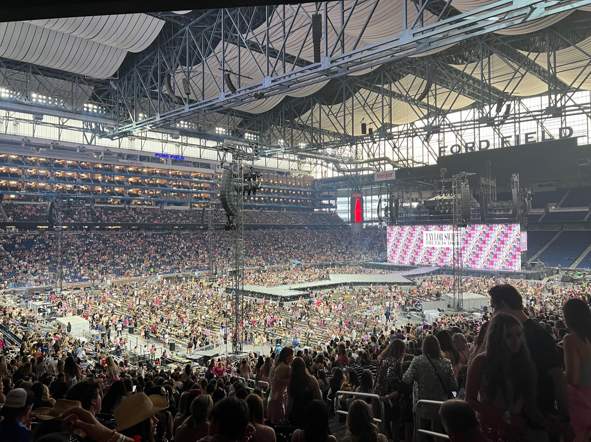

Hello! My name is Hailey and for my final SI 339 project, I created
a website dedicated to my favorite songs from some of Taylor Swift's eras.
Please the buttons on the "Choose Era" page to move through each era.

I was lucky enough to attend the Eras Tour on June 10 in Detroit.